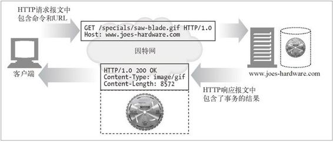
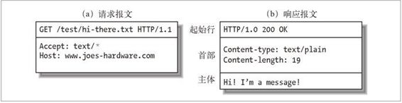
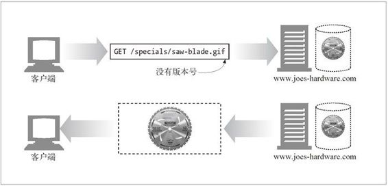

3.2 报文的组成部分
HTTP 报文是简单的格式化数据块。看一下图 3-3 给出的例子。每条报文都包含一条来自客户端的请求，或者一条来自服务器的响应。它们由三个部分组成：对报文进行描述的起始行（start line）、包含属性的首部（header）块，以及可选的、包含数据的主体（body）部分。
图 3-3 HTTP 报文的三个部分
起始行和首部就是由行分隔的 ASCII 文本。每行都以一个由两个字符组成的行终止序列作为结束，其中包括一个回车符（ASCII 码 13）和一个换行符（ASCII 码 10）。这个行终止序列可以写做 CRLF。需要指出的是，尽管 HTTP 规范中说明应该用 CRLF 来表示行终止，但稳健的应用程序也应该接受单个换行符作为行的终止。有些老的，或不完整的 HTTP 应用程序并不总是既发送回车符，又发送换行符。
实体的主体或报文的主体（或者就称为主体）是一个可选的数据块。与起始行和首部不同的是，主体中可以包含文本或二进制数据，也可以为空。
在图 3-3 的例子中，首部给出了一些与主体有关的信息。Content-Type 行说明了主体是什么——在这个例子中，就是纯文本文档。Content-Length 行说明了主体有多大，在这里就只有 19 个字节。
3.2.1 报文的语法
所有的 HTTP 报文都可以分为两类：请求报文（request message）和响应报文（response message）。请求报文会向 Web 服务器请求一个动作。响应报文会将请求的结果返回给客户端。请求和响应报文的基本报文结构相同。图 3-4 显示了获取一张 GIF 图片所需的请求和响应报文。

图 3-4 包含请求和响应报文的 HTTP 事务
这是请求报文的格式：
<method> <request-URL> <version>
<headers>
<entity-body>
这是响应报文的格式（注意，只有起始行的语法有所不同）：
<version> <status> <reason-phrase>
<headers>
<entity-body>
下面是对各部分的简要描述。
方法（method）
客户端希望服务器对资源执行的动作。是一个单独的词，比如 GET、HEAD 或 POST。本章稍后将详细介绍方法。
请求 URL（request-URL）
命名了所请求资源，或者 URL 路径组件的完整 URL。如果直接与服务器进行对话，只要 URL 的路径组件是资源的绝对路径，通常就不会有什么问题——服务器可以假定自己是 URL 的主机 / 端口。第 2 章详细地介绍了 URL 的语法。
版本（version）
报文所使用的 HTTP 版本，其格式看起来是这样的：
HTTP/<major>.<minor>
其中主要版本号（major）和次要版本号（minor）都是整数。本章稍后会详细说明 HTTP 的版本问题。
状态码（status-code）
这三位数字描述了请求过程中所发生的情况。每个状态码的第一位数字都用于描述状态的一般类别（“成功”、“出错”等）。本章稍后提供了 HTTP 规范定义的状态码及其含义的完整列表。
原因短语（reason-phrase）
数字状态码的可读版本，包含行终止序列之前的所有文本。本章稍后提供了 HTTP 规范定义的所有状态码的原因短语示例。原因短语只对人类有意义，因此，比如说，尽管响应行 HTTP/1.0 200 NOT OK 和 HTTP/1.0 200 OK 中原因短语的含义不同，但同样都会被当作成功指示处理。
首部（header）
可以有零个或多个首部，每个首部都包含一个名字，后面跟着一个冒号（:），然后是一个可选的空格，接着是一个值，最后是一个 CRLF。首部是由一个空行（CRLF）结束的，表示了首部列表的结束和实体主体部分的开始。有些 HTTP 版本，比如 HTTP/1.1，要求有效的请求或响应报文中必须包含特定的首部。本章稍后会探讨各种 HTTP 首部。
实体的主体部分（entity-body）
实体的主体部分包含一个由任意数据组成的数据块。并不是所有的报文都包含实体的主体部分，有时，报文只是以一个 CRLF 结束。第 15 章详述了实体。
图 3-5 展示了一些假想的请求和响应报文。

图 3-5 请求和响应报文示例
注意，一组 HTTP 首部总是应该以一个空行（仅 CRLF）结束，甚至即使没有首部和实体的主体部分也应如此。但由于历史原因，很多客户端和服务器都在没有实体的主体部分时，（错误地）省略了最后的 CRLF。为了与这些流行但不符合规则的实现进行互通，客户端和服务器都应该接受那些没有最后那个 CRLF 的报文。
3.2.2 起始行
所有的 HTTP 报文都以一个起始行作为开始。请求报文的起始行说明了要做些什么。响应报文的起始行说明发生了什么。
请求行
请求报文请求服务器对资源进行一些操作。请求报文的起始行，或称为请求行，包含了一个方法和一个请求 URL，这个方法描述了服务器应该执行的操作，请求 URL 描述了要对哪个资源执行这个方法。请求行中还包含 HTTP 的版本，用来告知服务器，客户端使用的是哪种 HTTP。
所有这些字段都由空格符分隔。在图 3-5a 中，请求方法为 GET，请求 URL 为/test/hi-there.txt，版本为 HTTP/1.1。在 HTTP/1.0 之前，并不要求请求行中包含 HTTP 版本号。
响应行
响应报文承载了状态信息和操作产生的所有结果数据，将其返回给客户端。响应报文的起始行，或称为响应行，包含了响应报文使用的 HTTP 版本、数字状态码，以及描述操作状态的文本形式的原因短语。
所有这些字段都由空格符进行分隔。在图 3-5b 中，HTTP 版本为 HTTP/1.0，状态码为 200（表示成功），原因短语为 OK，表示文档已经被成功返回了。在 HTTP/1.0 之前，并不要求在响应中包含响应行。
方法
请求的起始行以方法作为开始，方法用来告知服务器要做些什么。比如，在行“GET /specials/saw-blade.gif HTTP/1.0”中，方法就是 GET。
HTTP 规范中定义了一组常用的请求方法。比如，GET 方法负责从服务器获取一个文档，POST 方法会向服务器发送需要处理的数据，OPTIONS 方法用于确定 Web 服务器的一般功能，或者 Web 服务器处理特定资源的能力。
表 3-1 描述了 7 种这样的方法。注意，有些方法的请求报文中有主体，有些则是无主体的请求。
表3-1 常用的HTTP方法
| 方 法 | 描 述 | 是否包含主体 |
| GET | 从服务器获取一份文档 | 否 |
| HEAD | 只从服务器获取文档的首部 | 否 |
| POST | 向服务器发送需要处理的数据 | 是 |
| PUT | 将请求的主体部分存储在服务器上 | 是 |
| TRACE | 对可能经过代理服务器传送到服务器上去的报文进行追踪 | 否 |
| OPTIONS | 决定可以在服务器上执行哪些方法 | 否 |
| DELETE | 从服务器上删除一份文档 | 否 |
并不是所有服务器都实现了表 3-1 列出的所有 7 种方法。而且，由于 HTTP 设计得易于扩展，所以除了这些方法之外，其他服务器可能还会实现一些自己的请求方法。这些附加的方法是对 HTTP 规范的扩展，因此被称为扩展方法。
状态码
方法是用来告诉服务器做什么事情的，状态码则用来告诉客户端，发生了什么事情。状态码位于响应的起始行中。比如，在行 HTTP/1.0 200 OK 中，状态码就是 200。
客户端向一个 HTTP 服务器发送请求报文时，会发生很多事情。幸运的话，请求会成功完成。但你不会总是那么幸运的。服务器可能会告诉你无法找到所请求的资源，你没有访问资源的权限，或者资源被移到了其他地方。
状态码是在每条响应报文的起始行中返回的。会返回一个数字状态和一个可读的状态。数字码便于程序进行差错处理，而原因短语则更便于人们理解。
可以通过三位数字代码对不同状态码进行分类。200 到 299 之间的状态码表示成功。300 到 399 之间的代码表示资源已经被移走了。400 到 499 之间的代码表示客户端的请求出错了。500 到 599 之间的代码表示服务器出错了。
表 3-2 列出了状态码的分类。
表3-2 状态码分类
| 整体范围 | 已定义范围 | 分 类 |
| 100～199 | 100～101 | 信息提示 |
| 200～299 | 200～206 | 成功 |
| 300～399 | 300～305 | 重定向 |
| 400～499 | 400～415 | 客户端错误 |
| 500～599 | 500～505 | 服务器错误 |
当前的 HTTP 版本只为每类状态定义了几个代码。随着协议的发展，HTTP 规范中会正式地定义更多的状态码。如果收到了不认识的状态码，可能是有人将其作为当前协议的扩展定义的。可以根据其所处范围，将它作为那个类别中一个普通的成员来处理。
比如，如果收到了状态码 515（在表 3-2 所列 5_XX_ 代码的已定义范围之外），就应该认为这条响应指出了服务器的错误，这是 5_XX_ 报文的通用类别。
表 3-3 列出了部分最常见的状态码。本章稍后会详细解释当前在用的所有 HTTP 状态码。
表3-3 常见状态码
| 状 态 码 | 原因短语 | 含 义 |
| 200 | OK | 成功。请求的所有数据都在响应主体中 |
| 401 | Unauthorized（未授权） | 需要输入用户名和密码 |
| 404 | Not Found（未找到） | 服务器无法找到所请求URL对应的资源 |
原因短语
原因短语是响应起始行中的最后一个组件。它为状态码提供了文本形式的解释。比如，在行 HTTP/1.0 200 OK 中，OK 就是原因短语。
原因短语和状态码是成对出现的。原因短语是状态码的可读版本，应用程序开发者将其传送给用户，用以说明在请求期间发生了什么情况。
HTTP 规范并没有提供任何硬性规定，要求原因短语以何种形式出现。本章稍后列出了状态码和一些建议使用的原因短语。
版本号
版本号会以 HTTP/x.y 的形式出现在请求和响应报文的起始行中。为 HTTP 应用程序提供了一种将自己所遵循的协议版本告知对方的方式。
使用版本号的目的是为使用 HTTP 的应用程序提供一种线索，以便互相了解对方的能力和报文格式。在与使用 HTTP 1.1 的应用程序进行通信的 HTTP 1.2 应用程序应该知道，它不能使用任何新的 1.2 特性，因为使用老版本协议的应用程序很可能无法实现这些特性。
版本号说明了应用程序支持的最高 HTTP 版本。但 HTTP/1.0 应用程序在解释包含 HTTP/1.1 的响应时，会认为这个响应是个 1.1 响应，而实际上这只是响应应用程序所使用的协议等级，在这些情况下，版本号会在应用程序之间造成误解 1。
1 http://httpd.apache.org/docs-2.0/misc/known_client_problems.html 上有更多在 Apache 与客户端之间出现此问题的案例。
注意，版本号不会被当作小数来处理。版本中的每个数字（比如 HTTP/1.0 中的 1 和 0）都会被当作一个单独的数字来处理。因此，在比较 HTTP 版本时，每个数字都必须单独进行比较，以便确定哪个版本更高。比如，HTTP/2.22 就比 HTTP/2.3 的版本要高，因为 22 比 3 大。
3.2.3 首部
前一小节的重点是请求和响应报文的第一行（方法、状态码、原因短语和版本号）。跟在起始行后面的就是零个、一个或多个 HTTP 首部字段（参见图 3-5）。
HTTP 首部字段向请求和响应报文中添加了一些附加信息。本质上来说，它们只是一些名 / 值对的列表。比如，下面的首部行会向 Content-Length 首部字段赋值 19：
Content-length：19
首部分类
HTTP 规范定义了几种首部字段。应用程序也可以随意发明自己所用的首部。HTTP 首部可以分为以下几类。
通用首部
既可以出现在请求报文中，也可以出现在响应报文中。
请求首部
提供更多有关请求的信息。
响应首部
提供更多有关响应的信息。
实体首部
描述主体的长度和内容，或者资源自身。
扩展首部
规范中没有定义的新首部。
每个 HTTP 首部都有一种简单的语法：名字后面跟着冒号（ ：），然后跟上可选的空格，再跟上字段值，最后是一个 CRLF。表 3-4 列出了一些常见的首部实例。
表3-4 常见的首部实例
| 首部实例 | 描 述 |
| Date:Tue,3Oct 1997 02:16:03 GMT | 服务器产生响应的日期 |
| Content-length:15040 | 实体的主体部分包含了15 040字节的数据 |
| Content-type:image/gif | 实体的主体部分是一个GIF图片 |
| Accept: image/gif, image/jpeg, text/html | 客户端可以接收GIF图片和JPEG图片以及HTML |
首部延续行
将长的首部行分为多行可以提高可读性，多出来的每行前面至少要有一个空格或制表符（tab）。
例如：
HTTP/1.0 200 OK
Content-Type: image/gif
Content-Length: 8572
Server: Test Server
Version 1.0
在这个例子中，响应报文里包含了一个 Server 首部，其值被划分成了多个延续行。该首部的完整值为 Test Server Version 1.0。
本章稍后将简要介绍所有的 HTTP 首部。附录 C 提供了所有首部更为详细的参考。
3.2.4 实体的主体部分
HTTP 报文的第三部分是可选的实体主体部分。实体的主体是 HTTP 报文的负荷。就是 HTTP 要传输的内容。
HTTP 报文可以承载很多类型的数字数据：图片、视频、HTML 文档、软件应用程序、信用卡事务、电子邮件等。
3.2.5 版本0.9的报文
HTTP 版本 0.9 是 HTTP 协议的早期版本。是当今 HTTP 所拥有的请求及响应报文的鼻祖，但其协议要简单得多（参见图 3-6）。

图 3-6 HTTP/0.9 事务
HTTP/0.9 报文也由请求和响应组成，但请求中只包含方法和请求 URL，响应中只包含实体。它没有版本信息（它是第一个，而且是当时唯一的版本），没有状态码或原因短语，也没有首部。
但这种简单协议无法提供更多的灵活性，也无法实现本书中描述的大部分 HTTP 特性和应用。这里对其进行简要的描述，是因为仍然有一些客户端、服务器和其他应用程序在使用这个协议，应用程序的编写者应该清楚它的局限性。